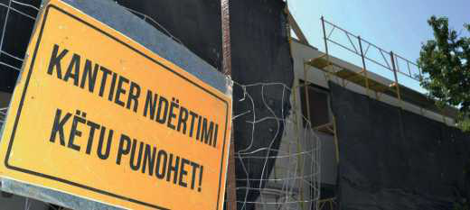

TEMATIKA 4: NJOHJA E RREZIQEVE4. Kujdes, këtu punohet!
Lexo dhe mëso
Vendndërtimet janë zona ku punohet për të ndërtuar objekte të reja. Këto vende rrethohen me shenja të shumta informuese mbi sigurinë, me qëllim parandalimin e rreziqeve që mund të ndodhin në ato mjedise. Ne duhet t'i njohim dhe t'i respektojmë shenjat e sigurisë kudo që i hasim ato, por sidomos në vende ku ndërtohet.
Vendet e ndërtimit mund të jenë të rrezikshme, për shkak të makinerive të larta, materialeve që përdoren aty etj. Në këto vende lejohen të futen vetëm punonjësit, të cilët janë të veshur me uniformën e tyre dhe mbajnë kaskë mbrojtëse në kokë.
Veçanërisht fëmijët duhet të tregojnë shumë kujdes, që të mos futen kurrë në një vend ndërtimi. Makinat e mëdha që lëvizin brenda dhe jashtë vendit të ndërtimit paraqesin rrezik për fëmijët. Por gjithashtu ekziston edhe rreziku nga rënia e materialeve dhe e pajisjeve të ndryshme nga lartësitë. Po ashtu janë të rrezikshme edhe hapjet dhe gërmimet e tokës, të cilat pas reshjeve shndërrohen në puseta të mbushura ujë. Prandaj fëmijët nuk duhet të hyjnë apo të luajnë asnjëherë në afërsi të një vendi ndërtimi.
